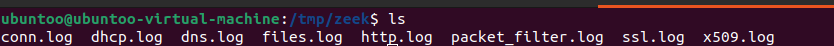

Analyzing Offline PCAP Files with Zeek
This lab guides you through the process of opening and analyzing offline PCAP files using Zeek, a powerful network security monitoring tool. You will learn how to download a PCAP file, set up a temporary analysis environment, and interpret the resulting logs.
Preparing the Environment
Download a PCAP File:
To start, download a PCAP file from a network traffic analysis resource such as the Malware Traffic Analysis website. These files capture network packets that can be used for offline analysis.
Unzip the PCAP File:
After downloading the PCAP file, unzip it using a suitable tool. This file will be used for offline analysis with Zeek.
Create a Temporary Directory:
It’s a good practice to create a temporary directory for analysis to keep things organized. Use the following commands to create and navigate to a new folder:
$ cd /tmp/ $ mkdir zeek $ cd zeek
Move the PCAP File:
Move the downloaded PCAP file to your newly created directory:
$ mv ~/Downloads/file.pcap .
Running Zeek on the PCAP File
Define Paths and Run Zeek:
To analyze the PCAP file with Zeek, you need to specify the path to the Zeek binary and the PCAP file. Use the following command, replacing
file.pcapwith the actual name of your downloaded file:$ /opt/zeek/bin/zeek -r file.pcap
Understanding the Need for PCAP Analysis -~~~~~~~~~~~~~~~~~~~~~~~~~~~~~~~~~~~~~~~
Analyzing PCAP files from different networks is crucial for several reasons:
Verification of Alerts: After monitoring traffic and identifying alerts, it is essential to verify whether these alerts are false positives or true positives. This verification process often involves detailed traffic analysis.
Threat Analysis: Sending PCAP files to threat analyzers helps in a thorough investigation of potential threats. Tools like Zeek are invaluable for this purpose as they provide detailed insights into the network traffic.
Zeek’s Role in Threat Analysis
Zeek is highly regarded for its ability to provide detailed logs and analysis. As an NDR (Network Detection and Response) tool, it excels in transforming raw traffic data into actionable intelligence.
Viewing and Interpreting Logs
After running Zeek, various log files are generated, each providing specific insights into different aspects of the network traffic. Here are examples of some key log files and their typical contents:
conn.log:
The conn.log file records connection summaries. Here is a sample of what this log might look like:
fields ts uid id.orig_h id.orig_p id.resp_h id.resp_p proto service duration orig_bytes > #types time string addr port addr port enum string interval count count string bool bool count > 1423419600.819788 CQfQn612S55RjxFl9g 172.16.137.40 58408 224.0.0.252 5355 udp dns 0.097898 50 > 1423419600.781778 CRcFzbS4TfYak61aa 172.16.137.40 68 172.16.137.1 67 udp dhcp - - - > 1423419600.793348 Cxx7Bx1A0LU7ohhlne 255.255.255.255 68 172.16.137.1 67 udp dhcp - - - > 1423419900.853959 CJ6jD43Klex3jeANJ5 172.16.137.40 58501 224.0.0.252 5355 udp dns 0.105265 50
dhcp.log:
The dhcp.log file contains DHCP transaction details. Below is an example:
fields ts uids client_addr server_addr mac host_name client_fqdn domain requested_addr assigned_addr > assigned_addr lease_time client_message server_message #types time set[string] addr addr string string string string addr addr interval string string vector Mike-PC mshome.net - 192.168.137.40 604800.000000 1423419600.781778 CRcFzbS4TfYak61aa,Cxx7Bx1A0LU7ohhlne 172.16.137.40 172.16.137.1 08:00:2b:ef:ab:7c Mike-PC Mike-PMike-PC mshome.net - 192.168.137.40 604800.000000> 1423419900.808118 CZnaaj19D0aQUbfGFh,Csb4f01IRRISWbXUOg 172.16.137.40 172.16.137.1 08:00:2b:ef:ab:7c Mike-PC Mike-PMike-PC mshome.net - 192.168.137.40 604800.000000> 1423420200.849432 CVwUmp4Kijfstuf06k,CwY5OgZ02ASY1eMO8 172.16.137.40 172.16.137.1 08:00:2b:ef:ab:7c Mike-PC Mike-P> 1423420334.594108 Chd2UD2lbPX5uPnfga,CjZoYl4e3cumXqxVFc 172.16.137.40 - 08:00:2b:ef:ab:7c Mike-PC - m - 192.168.137.40 604800.000000
dns.log:
The dns.log file logs DNS queries and responses. Here is an example entry:
#fields ts uid id.orig_h id.orig_p id.resp_h id.resp_p proto trans_id rtt query qclass qclas> #types time string addr port addr port enum count interval string count string count string count strin> 1423419600.819788 CQfQn612S55RjxFl9g 172.16.137.40 58408 224.0.0.252 5355 udp 49811 - mike-pc 1 C_INT> 1423419600.917686 CQfQn612S55RjxFl9g 172.16.137.40 58408 224.0.0.252 5355 udp 49811 - mike-pc 1 C_INT> 1423419900.853959 CJ6jD43Klex3jeANJ5 172.16.137.40 58501 224.0.0.252 5355 udp 227 - mike-pc 1 C_INT> 1423419900.959224 CJ6jD43Klex3jeANJ5 172.16.137.40 58501 224.0.0.252 5355 udp 227 - mike-pc 1 C_INT> 1423420218.437685 C0hLRJuSzI82GwE5b 172.16.137.40 137 172.16.137.255 137 udp 33940 - MIKE-PC 1 C_INT>
http.log:
The http.log file contains HTTP request and response details. Here is a sample:
id.resp_p trans_depth method host uri referrer version user_agent origin request_body_len response_bod> string string string string string string count count count string count string set[enum] string string s et[string] > 216.146.39.70 80 1 GET checkip.dyndns.org / - 1.1 Mozilla/5.0 - 0 104 200 OK > 71.18.62.202 80 1 GET cwvancouver.com /cp/images/digits/arrowu.jpg - 1.1 Mozilla/5.0 - 0 4338> 192.185.35.92 80 1 GET harveyouellet.com /TOXICOUSTIQUE/arrowu.jpg - - Mozilla/5.0 - 0 > 192.185.35.92 80 1 GET harveyouellet.com /TOXICOUSTIQUE/arrowu.jpg - - Mozilla/5.0 - 0 > 192.185.35.92 80 1 GET harveyouellet.com /TOXICOUSTIQUE/arrowu.jpg - - Mozilla/5.0 -
Analyzing Logs for Anomalies
Zeek logs provide a wealth of information about network traffic, which can be analyzed to detect anomalies and potential security threats. Here are some key steps and tips for analyzing Zeek logs:
Identify Suspicious Connections:
Look for unusual IP addresses, ports, or protocols in the conn.log. Connections with high durations or large data transfers can also be indicators of suspicious activity.
Analyze DNS Queries:
Review the dns.log for unexpected or frequent queries to unknown domains. Pay special attention to requests for domains with unusual TLDs (Top-Level Domains) or those associated with known threats.
Examine HTTP Traffic:
In the http.log, check the user_agent field for uncommon or spoofed user agents. Look at the uri field for suspicious paths or filenames, and the host field for potentially malicious domains.
Correlate Across Logs:
Correlating data from different logs (e.g., conn.log, dns.log, and http.log) can help identify patterns of malicious behavior that might not be obvious from a single log. For instance, a suspicious DNS query followed by an HTTP request to the queried domain could indicate a malicious download.
Automate Analysis:
Consider using automated tools and scripts to parse and analyze Zeek logs. This can help in quickly identifying anomalies and reducing the time required for manual analysis.
Conclusion
This lab provided a step-by-step guide to analyzing offline PCAP files with Zeek. By downloading a PCAP file, setting up a temporary analysis environment, and interpreting the resulting logs, you have gained practical experience in using Zeek for network traffic analysis. Understanding how to analyze Zeek logs is crucial for network security monitoring and threat detection.
For further reading and advanced techniques, refer to Zeek’s official documentation and community resources.
References
Malware Traffic Analysis <http://malware-traffic-analysis.net/>